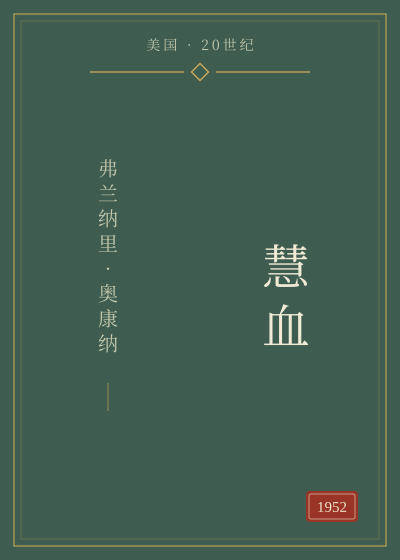
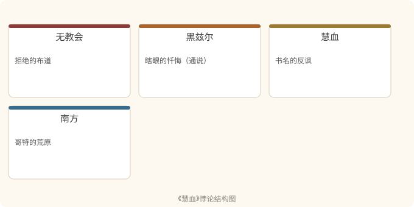

慧血
一、基本信息
| 作者 | 弗兰纳里·奥康纳 |
|---|---|
| 成书/出版 | 1952年（作者页B291口径：Wise Blood (1952)） Flannery OConnor — Encyclopaedia Britannica（百科全书） |
| 国别/地区 | 美国 |
| 时代 | 现当代 · 20世纪 |
| 体裁 | 长篇小说 |
| 语言 | 英语 |

悖论结构图（主题·结构图）
二、创作背景
作者页（B291）：奥康纳 major_works 载'Wise Blood (1952)'（B291 作者页定位，详见 haorennanxun 条核对）。
题材（通说待核）：退伍兵黑兹尔·莫茨的'无教会'布道——拒绝基督却离不开基督。
三、内容脉络
黑兹尔创立'无教会之教'——荒诞布道与最后的自毁（通说待核）。
四、主要人物表
| 人物 | 身份 | 说明 |
|---|---|---|
| 黑兹尔·莫茨 | 退伍兵 | （通说待核） |
| 伊诺克 | 青年 | （通说待核） |
五、主题与艺术特点
- '无教会'的悖论：拒绝即证明（通说待核）。
- 南方哥特（B291：master of the Southern gothic——作者级）。
- 瞎眼与忏悔（通说待核）。
六、影响与评论
- 作者页：奥康纳首部长篇（B291 作者页口径）。
Flannery OConnor — Encyclopaedia Britannica（百科全书） - 作者页：南方哥特大师（B291 作者级定位）。
Flannery OConnor — Encyclopaedia Britannica（百科全书）
七、阅读建议
难点
- '无教会'的宗教戏仿。
- 哥特细节。
- 《慧血》（新星出版社《慧血：奥康纳作品集》，通说待核）。
- 英文原版。
先《好人难寻》后本作。
八、待核实
- 1952年出版（Harcourt, Brace说）核对。
- 黑兹尔·莫茨人名核对。
- 1969年电影改编待核。
本页主要来源
弗兰纳里·奥康纳的其他收录作品：好人难寻